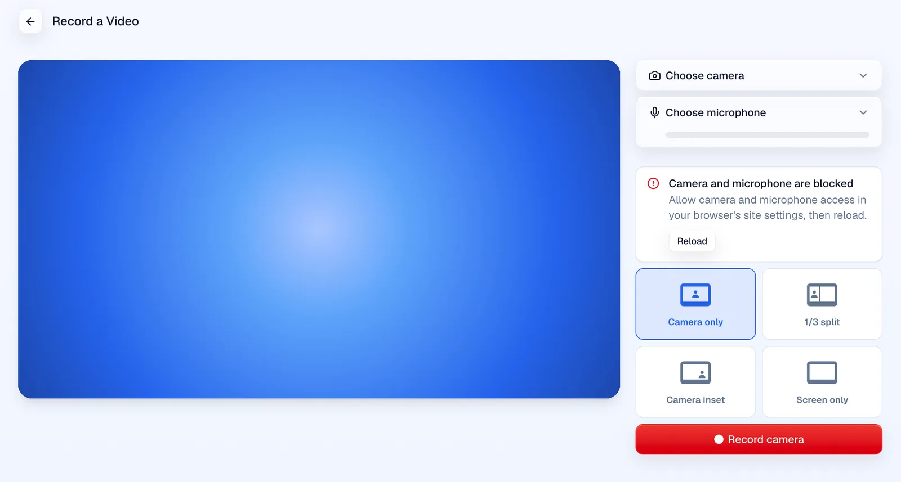
Camera and microphone blocked
The browser refused camera and microphone access.
- Camera and microphone are blocked
- Allow camera and microphone access in your browser's site settings, then reload.
- Reload
Real. Headless Chrome with no permission granted denies the request.
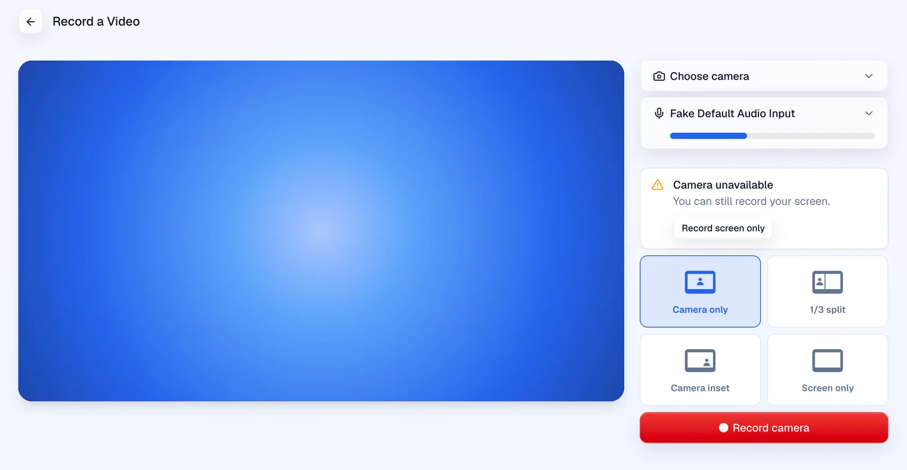
Camera unavailable
The camera failed but the microphone works. Hidden while Screen only is picked.
- Camera unavailable
- You can still record your screen.
- Record screen only
Real. Microphone permission granted, camera permission withheld.
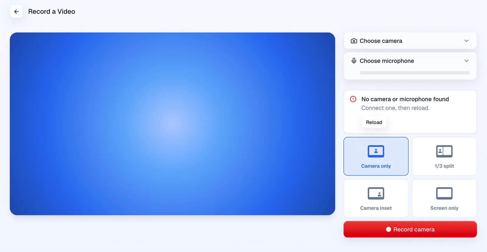
No camera or microphone
The browser found no camera or microphone at all.
- No camera or microphone found
- Connect one, then reload.
- Reload
Forced. The camera request was made to fail with NotFoundError, the error Chrome gives when no device exists.
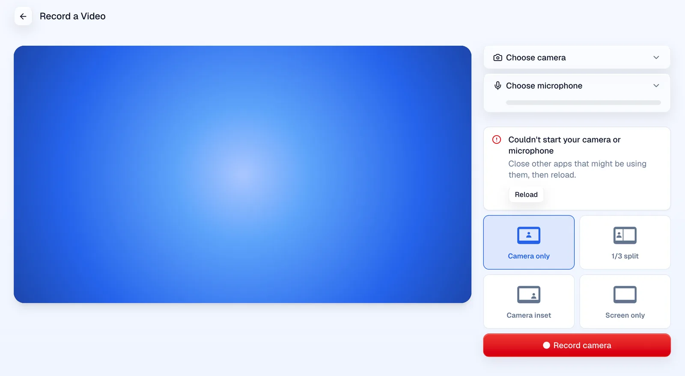
Camera or microphone failed to start
Anything else, usually another app holding the camera.
- Couldn't start your camera or microphone
- Close other apps that might be using them, then reload.
- Reload
Forced. The camera request was made to fail with NotReadableError, the error Chrome gives when another app holds the camera.
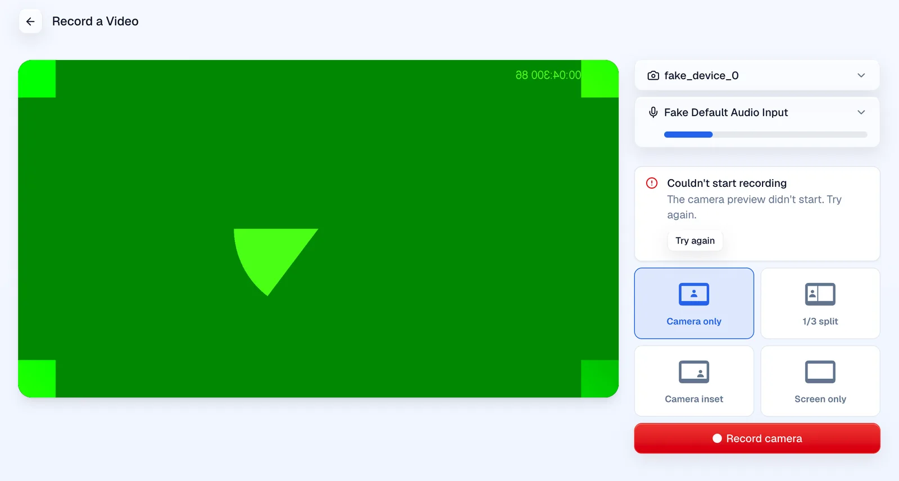
Recording failed to start
Clicking Record when the recorder's audio clock will not start.
- Couldn't start recording
- The camera preview didn't start. Try again.
- Try again
Forced. Every AudioContext was made to report suspended and refuse to resume.
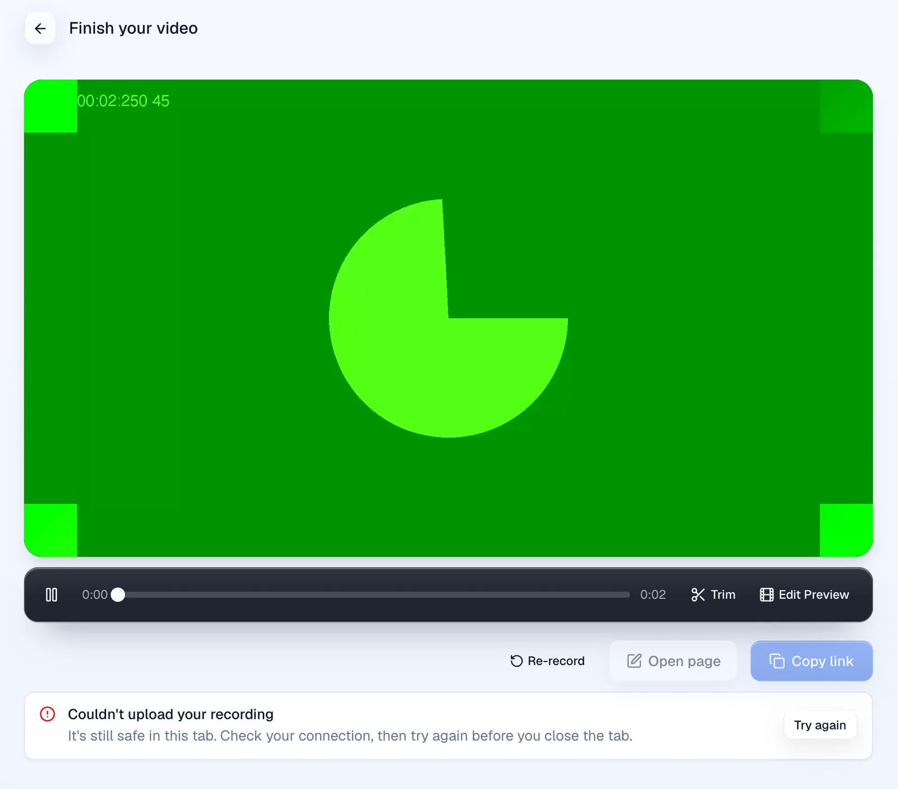
Upload failed
The upload to Mux failed after Stop. The take stays in the tab, and Copy link and Open page are disabled.
- Couldn't upload your recording
- It's still safe in this tab. Check your connection, then try again before you close the tab.
- Try again
Real failure. The script cut every final upload request, including the retries.
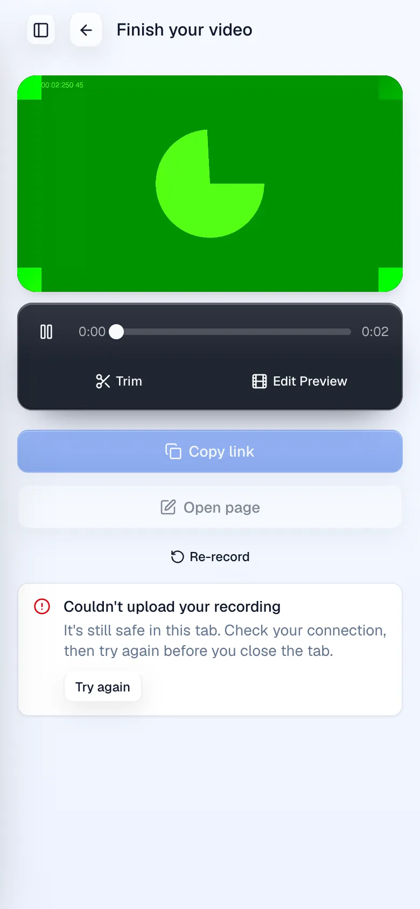
Upload failed at 390 wide
Same failure on a phone-width screen.
- Couldn't upload your recording
- Try again
Real, same as above.
Share link failed
Making the share link failed. The video itself is saved.
- Couldn't create the share link
- Your video is saved. Try again to get its link.
- Try again
Real failure. The script cut the share link request once, and Try again then worked.
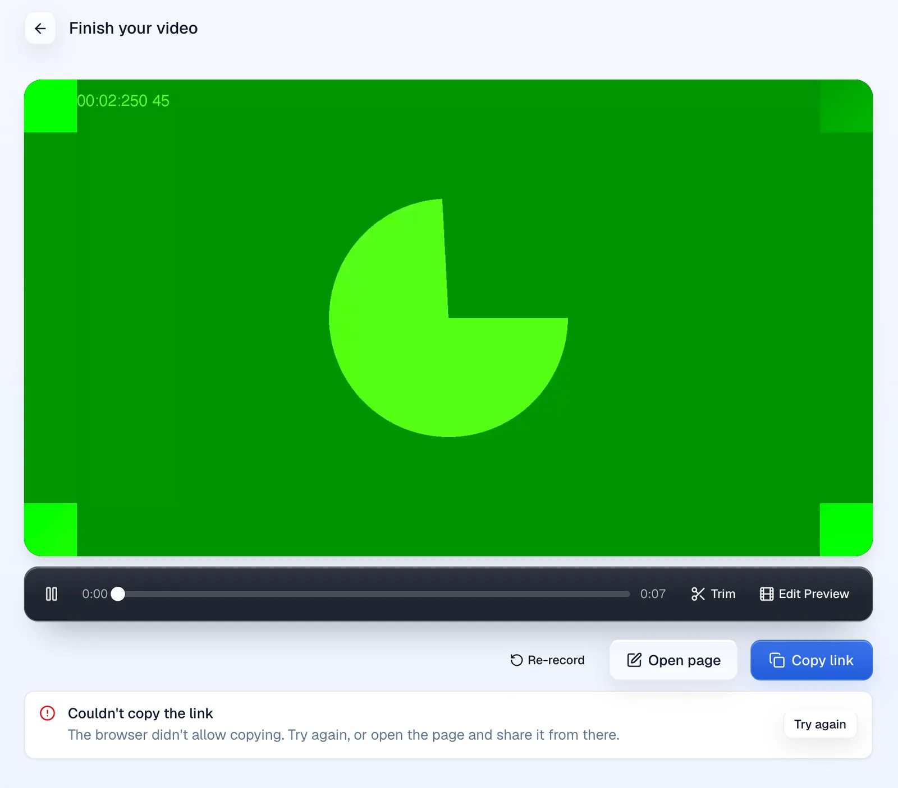
Copy failed
The browser refused the clipboard write.
- Couldn't copy the link
- The browser didn't allow copying. Try again, or open the page and share it from there.
- Try again
Forced. Revoking clipboard permission still let the copy through in headless Chrome, so the clipboard write was made to reject.
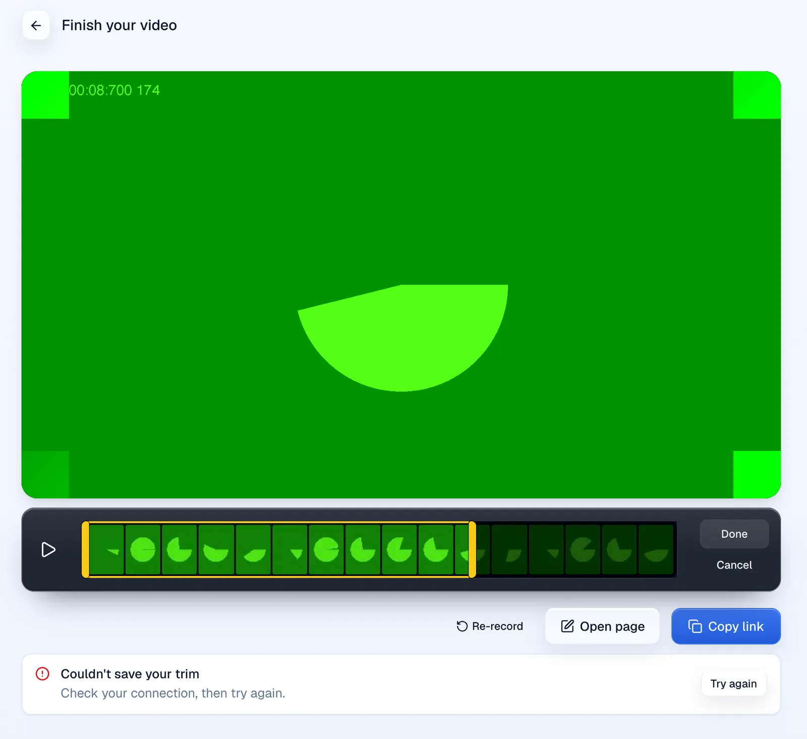
Trim save failed
Clicking Done in trim mode when the save fails. Trim mode stays open.
- Couldn't save your trim
- Check your connection, then try again.
- Try again
Real failure. The script cut the save requests.
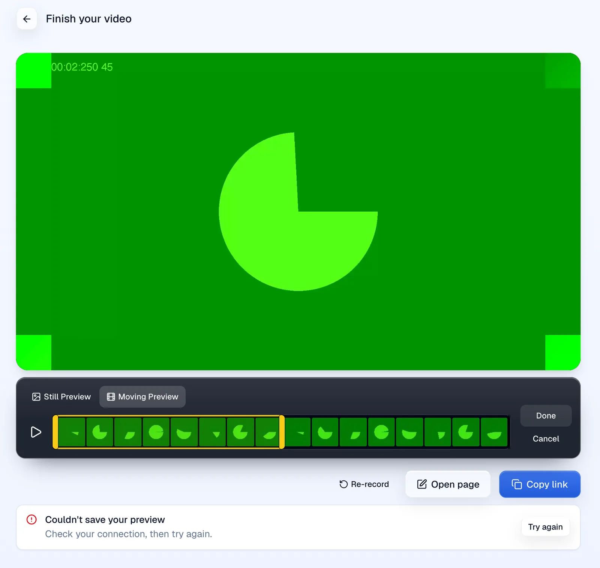
Preview save failed
Clicking Done in edit preview mode when the save fails. The mode stays open.
- Couldn't save your preview
- Check your connection, then try again.
- Try again
Real failure. The script cut the save requests, and Try again then saved.
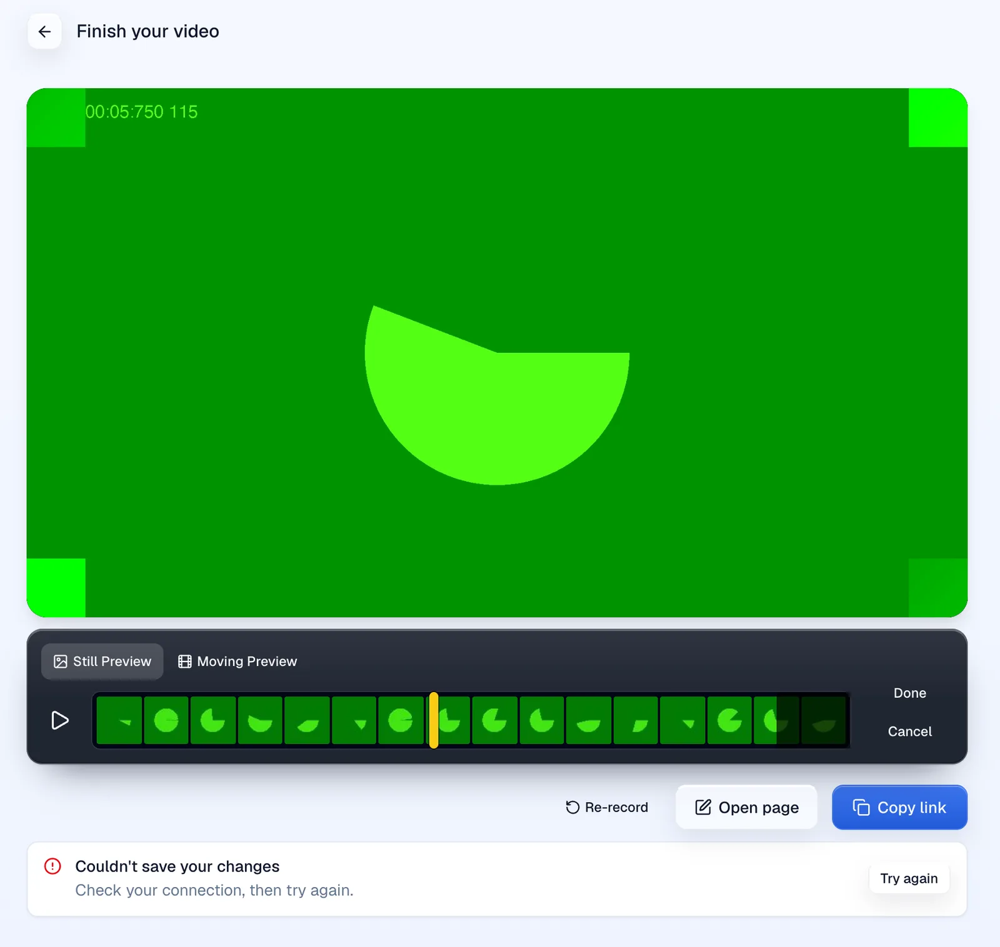
Changes save failed
Open page, or saving after the upload, fails. The recorder stays on the finish screen.
- Couldn't save your changes
- Check your connection, then try again.
- Try again
Real failure. The script cut the save behind Open page.